Creates a ggplot2 basemap for further plotting of data.
Usage
basemap(
x = NULL,
limits = NULL,
data = NULL,
shapefiles = NULL,
crs = NULL,
bathymetry = FALSE,
glaciers = FALSE,
rotate = FALSE,
legends = TRUE,
legend.position = "right",
lon.interval = NULL,
lat.interval = NULL,
bathy.style = NULL,
downsample = 0,
bathy.border.col = NA,
bathy.size = 0.1,
bathy.alpha = 1,
land.col = "grey60",
land.border.col = "black",
land.size = 0.1,
gla.col = "grey95",
gla.border.col = "black",
gla.size = 0.1,
grid.col = "grey70",
grid.size = 0.1,
base_size = 11,
projection.grid = FALSE,
expand.factor = 1,
verbose = FALSE
)Arguments
- x
The limit type (
limits,data, orshapefiles) is automatically recognized from the class of this argument.- limits
Map limits. One of the following:
numeric vector of length 4: The first element defines the start longitude, the second element the end longitude (counter-clockwise), the third element the minimum latitude, and the fourth element the maximum latitude of the bounding box. Also accepts
sf::st_bboxtype named vectors with limits in any order. The coordinates can be given as decimal degrees or coordinate units for shapefiles used by a projected map. Produces a rectangular map. Latitude limits not given in min-max order are automatically ordered to respect this requirement.single integer between 30 and 88 or -88 and -30 produces a polar map for the Arctic or Antarctic, respectively.
Can be omitted if
dataorshapefilesare defined.- data
A data frame, sp, or sf shape containing longitude and latitude coordinates. If a data frame, the coordinates have to be given in decimal degrees. The limits are extracted from these coordinates and produce a rectangular map. Suited for situations where a certain dataset is plotted on a map. The function attempts to guess the correct columns and it is advised to use intuitive column names for longitude (such as "lon", "long", or "longitude") and latitude ("lat", "latitude") columns. Can be omitted if
limitsorshapefilesare defined.- shapefiles
Either a list containing shapefile information or a character argument referring to a name of pre-made shapefiles in
shapefile_list. This name is partially matched. Can be omitted iflimitsordatais defined as decimal degrees.- crs
Coordinate reference system (CRS) for the map. If
NULL(default), the CRS is selected automatically based onlimits,data, orshapefiles. Passed tost_crs. Typically integers giving the EPGS code are the easiest. Cannot be used simultaneously withrotate.- bathymetry
Logical indicating whether bathymetry should be added to the map. Functions together with
bathy.style. See Details.- glaciers
Logical indicating whether glaciers and ice sheets should be added to the map.
- rotate
Logical indicating whether the projected maps should be rotated to point towards the pole relative to the mid-longitude limit.
- legends
Logical indicating whether the legend for bathymetry should be shown.
- legend.position
The position for ggplot2 legend. See the argument with the same name in theme.
- lon.interval, lat.interval
Numeric value specifying the interval of longitude and latitude grids.
NULLfinds reasonable defaults depending onlimits.- bathy.style
Character (plots bathymetry; list of alternatives in Details) or
NULL("raster_binned_blues" ifbathymetry = TRUE) defining the bathymetry style. Partially matched, can be abbreviated, and used to control bathymetry plotting together withbathymetry. See Details.- downsample
Integer defining the downsampling rate for raster bathymetries. A value of 0 (default) does not downsample, 1 skips every second row, 2 every second and third. See
geom_stars- bathy.alpha
Transparency parameter for the bathymetry fill color. See scale_alpha.
- land.col, gla.col, grid.col
Character code specifying the color of land, glaciers, and grid lines, respectively. Use
NAto remove the grid lines.- land.border.col, gla.border.col, bathy.border.col
Character code specifying the color of the border line for land, glacier, and bathymetry shapes.
- land.size, gla.size, bathy.size, grid.size
Numeric value specifying the width of the border line land, glacier and bathymetry shapes as well as the grid lines, respectively. Use the
LSfunction for a specific width in pt. See Details.- base_size
Base size parameter for ggplot. See ggtheme.
- projection.grid
Logical indicating whether the coordinate grid should show projected coordinates instead of decimal degree values. Useful to define limits for large maps in polar regions.
- expand.factor
Expansion factor for map limits. Can be used to zoom in (decrease the value under 1) and out (increase the value over 1) automatically (
data) limited maps. Defaults to 1, which means that outermost data points are located at the boundaries of the plotting region.- verbose
Logical indicating whether information about the projection and guessed column names should be returned as messages. Set to
FALSEto make the function silent.
Value
Returns a ggplot map, which can be assigned to an object and modified as any ggplot object.
Details
The function uses ggplot2, sf, stars and spatial files to plot maps of the world's oceans.
Limits
If the limits are in decimal degrees, the longitude limits ([1:2]) specify the start and end segments of corresponding angular lines that should reside inside the map area. The longitude limits are defined counter-clockwise. The latitude limits [3:4] define the parallels that should reside inside the limited region given the longitude segments. Note that the actual limited region becomes wider than the polygon defined by the coordinates (shown in Examples). Using data to limit the map, making the points barely fit into the map. The expand.factor argument can be used to adjust the space between map borders and points. If the limits are given as projected coordinates or as decimal degrees for maps with -60 < latitude < 60, limit elements represent lines encompassing the map area in cartesian space.
Projections
If the shapefiles are not specified, the function uses either the limits or data arguments to decide which projection to use. Up-to-date conditions are defined in define_shapefiles and shapefile_list functions. At the time of writing, the function uses three different projections (given as EPSG codes)
3995 WGS 84 / Arctic Polar Stereographic. Called "ArcticStereographic". For max latitude (
limits[4]) >= 60 (if min latitude (limits[3]) >= 30), and single integer latitudes >= 30 and <= 89.3031 WGS 84 / Antarctic Polar Stereographic. Called "AntarcticStereographic". For max latitude (
limits[4]) <= -60 (if min latitude (limits[3]) <= -30), and single integer latitudes <= -30 and >= -89.4326 WGS 84 / World Geodetic System 1984, used in GPS. Called "DecimalDegree". For min latitude (
limits[3]) < 30 or > -30, max latitude (limits[4]) < 60 or > -60, and single integer latitudes < 30 and > -30.
The rotate argument changes the pre-defined projection such that mid-longitude point in the map points northward.
The crs argument can be used to define the projection, which can be useful when plotting, for instance, model data that are difficult to transform into another projection.
Bathymetry
Bathymetry can be plotted by simply specifying bathymetry = TRUE or bathy.style (you won't need to specify both any longer). The former uses a low-resolution raster file shipped with ggOceanMaps. The package contains an option to plot higher resolution bathymetries than the default binned blue alternative (bathy.style = "raster_binned_blues"). These bathymetries can be accessed by specifying the bathy.style argument and require a download from ggOceanMapsLargeData or other online repositories. The bathy.style character argument consists of three parts separated by a _. The first part gives the type: raster, poly(gon), or contour. The two latter ones use vector data. The second part gives the resolution: binned, continuous or user. The continuous and user options cannot be used for vector data. The user option accepts any raster file that can be opened using read_stars. The path to the file has to be stored in ggOceanMaps.userpath option (e.g. options(ggOceanMaps.userpath = "PATH_TO_THE_FILE")) (you can set this in .Rprofile to avoid having to type it every time). The last part defines the color: blues or grays. These options can be abbreviated by specifying the first letter of each part. Gray contour lines are an exception to the rule above and can be plotted using bathy.style = "contour_gray". Future versions may contain a combination of raster and gray contours, but these have not been implemented yet. Currently implemented bathy.style alternatives are:
NULL(default). Bathymetry style is searched fromgetOption("ggOceanMaps.bathy.style"). If not found,"raster_binned_blues"is used."raster_binned_blues"or"rbb"plots binned raster bathymetry filled with different shades of blue. Does not require a download."raster_binned_grays"or"rbg"the same than above but uses different shades of gray."raster_continuous_blues"or"rcb"plots continuous raster bathymetry filled with different shades of blue. More detailed and visually more appealing than the binned bathymetry. Recommended. Requires a download."raster_continuous_grays"or"rcg"the same than above but uses different shades of gray."raster_user_blues"or"rub"plots continuous raster bathymetry filled with different shades of blue fromgetOption("ggOceanMaps.user.path"). Any file supported by read_stars should work. The file has to be placed into the location specified by the path. Experimental feature. Has been tested using ETOPO 60 arc-second and GEBCO 15 arc-second grids. Please report any bugs you find."raster_user_grays"or"rug"the same than above but uses different shades of gray."poly_binned_blues","poly_blues","pbb"or"pb"plots polygon bathymetry filled with different shades of blue. Default in the versions older than 2.0 of ggOceanMaps. Requires a download."poly_binned_grays","poly_grays","pbg"or"pg"same than above but uses different shades of gray."contour_binned_blues","contour_blues","cbb"or"cb"contour lines with different shades of blue. Requires a download."contour_gray","contour_gray"or"cg"plots gray contour lines. Requires a download.
The default can be changed by setting the ggOceanMaps.bathy.style option. options(ggOceanMaps.bathy.style = "poly_blues") would make the style similar to older pre-2.0 versions of ggOceanMaps.
Pre-made shapefiles
If the limits are not defined as decimal degrees (any longitude outside the range [-180, 180] or latitude [-90, 90]), the function will ask to specify shapefiles. The shapefiles can be defined by partially matching the names of the pre-made shapefiles in shapefile_list (e.g. "Ar" would be enough for "ArcticStereographic") or by specifying custom shapefiles.
Custom shapefiles
Custom shapefiles have to be a named list containing at least the following elements:
land Object name of the spatial polygon containing land. Required.
glacier Object name of the spatial polygon containing glaciers. Not required if glaciers are not needed.
bathy Object name of the spatial polygon or raster containing bathymetry data. Not required if bathymetry is not needed.
See Examples.
Line width and font size
The line size aesthetics in ggplot2 generates approximately 2.13 wider lines measured in pt than the given values. If you want a specific line width in pt, use the internal function LS to convert the desired line width to the ggplot2 equivalent. A similar function is also available for font sizes (FS).
References
Note that if you use this function to generate maps for a publication, it is advised to cite the underlying data. The spatial data used by this function have been acquired from the following sources:
Land polygons. Natural Earth Data 1:10m Physical Vectors with the Land and Minor Island datasets combined. Distributed under the CC Public Domain license (terms of use).
Glacier polygons. Natural Earth Data 1:10m Physical Vectors with the Glaciated Areas and Antarctic Ice Shelves datasets combined. Distributed under the CC Public Domain license (terms of use)
Bathymetry. NOAA National Centers for Environmental Information. 2022: ETOPO 2022 15 Arc-Second Global Relief Model. NOAA National Centers for Environmental Information. doi:10.25921/fd45-gt74 . Distributed under the U.S. Government Work license.
See also
Other basemap functions:
qmap(),
shapefile_list(),
transform_coord()
Examples
# The easiest way to produce a map is to use the limits
# argument and decimal degrees:
basemap(limits = 60) # synonym to basemap(60)
 # \donttest{
# Bathymetry can be added using the respective argument:
basemap(limits = -60, bathymetry = TRUE)
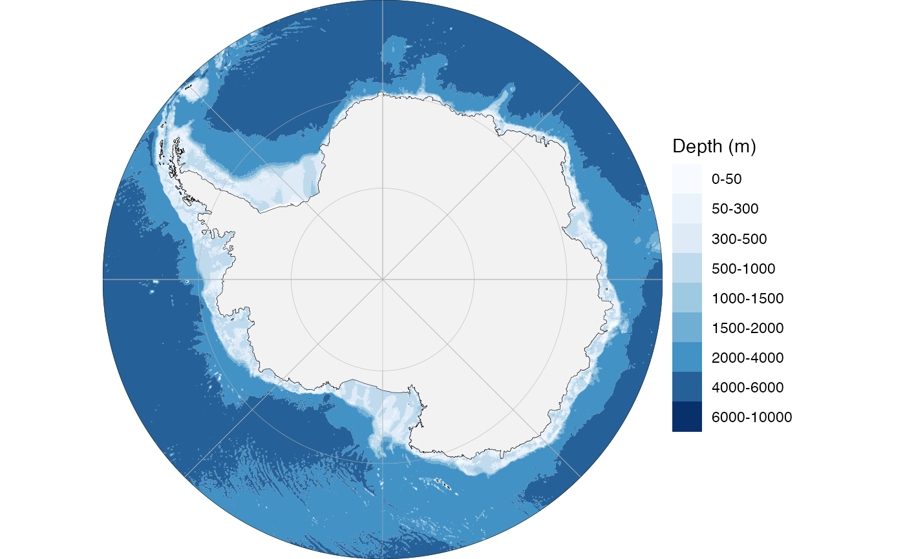
if (FALSE) {
# Glaciers require a download in the new version:
basemap(limits = -60, glaciers = TRUE, shapefiles = "Arctic")
}
# The easiest way to add data on the maps is to use the ggspatial functions:
dt <- data.frame(lon = c(-150, 150), lat = c(60, 90))
if(requireNamespace("ggspatial", quietly = TRUE)) {
basemap(data = dt, bathymetry = TRUE) +
ggspatial::geom_spatial_point(data = dt, aes(x = lon, y = lat),
color = "red")
}
#> Assuming `crs = 4326` in stat_spatial_identity()
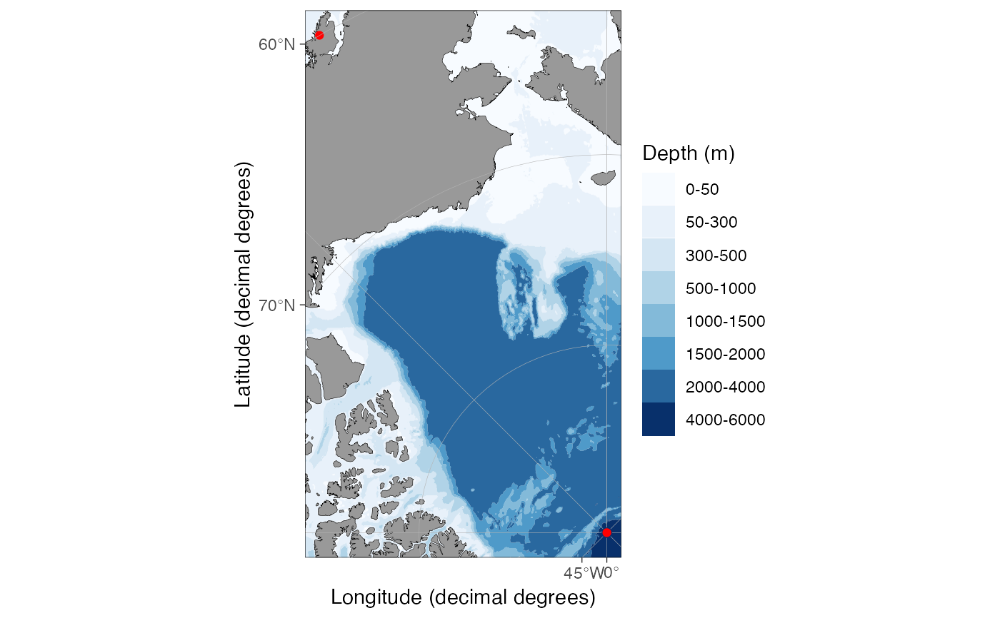
if (FALSE) {
# Note that writing out data = dt is required because there are multiple
# underlying ggplot layers plotted already:
basemap(data = dt) +
ggspatial::geom_spatial_point(dt, aes(x = lon, y = lat), color = "red")
#> Error: `mapping` must be created by `aes()`
}
# If you want to use native ggplot commands, you need to transform your data
# to the projection used by the map:
dt <- transform_coord(dt, bind = TRUE)
basemap(data = dt) +
geom_point(data = dt, aes(x = lon.proj, y = lat.proj), color = "red")
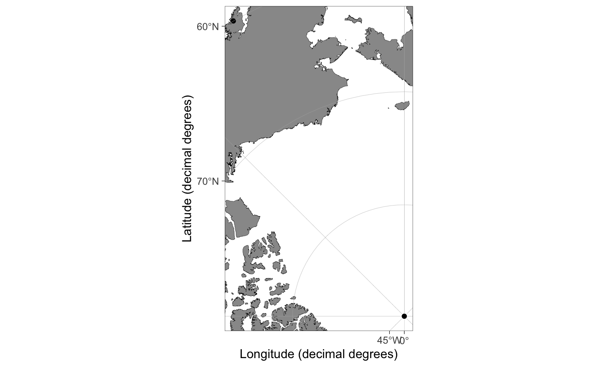
# The limits argument of length 4 plots a map anywhere in the world:
basemap(limits = c(100, 160, -20, 30), bathymetry = TRUE)
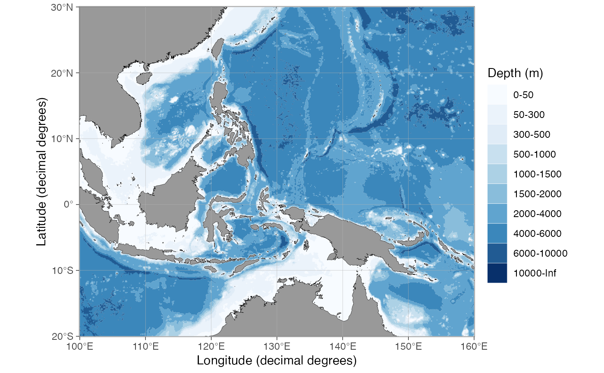
# The limits are further expanded when using the data argument:
dt <- data.frame(lon = c(-160, 160, 160, -160), lat = c(80, 80, 60, 60))
if(requireNamespace("ggspatial", quietly = TRUE)) {
basemap(data = dt) +
ggspatial::geom_spatial_polygon(data = dt, aes(x = lon, y = lat),
fill = NA, color = "red")
# Rotate:
basemap(data = dt, rotate = TRUE) +
ggspatial::geom_spatial_polygon(data = dt, aes(x = lon, y = lat),
fill = NA, color = "red")
}
#> `geom_polypath()` is deprecated: use `ggplot2::geom_polygon()` with the `subgroup` aesthetic
#> `geom_polypath()` is deprecated: use `ggplot2::geom_polygon()` with the `subgroup` aesthetic
#> Assuming `crs = 4326` in stat_spatial_identity()
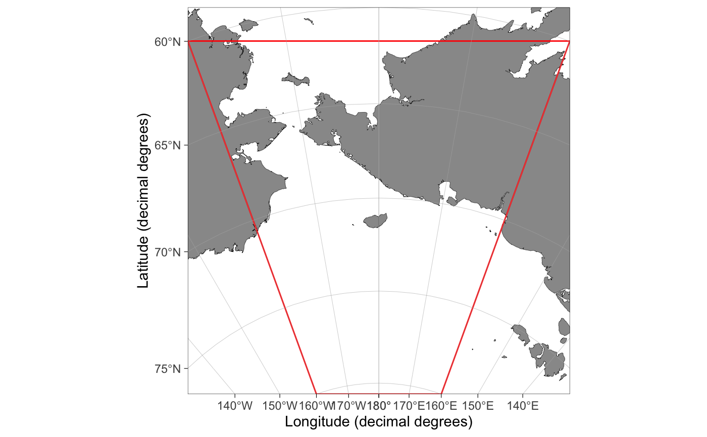
# Alternative:
basemap(data = dt, rotate = TRUE) +
geom_polygon(data = transform_coord(dt, rotate = TRUE),
aes(x = lon, y = lat), fill = NA, color = "red")
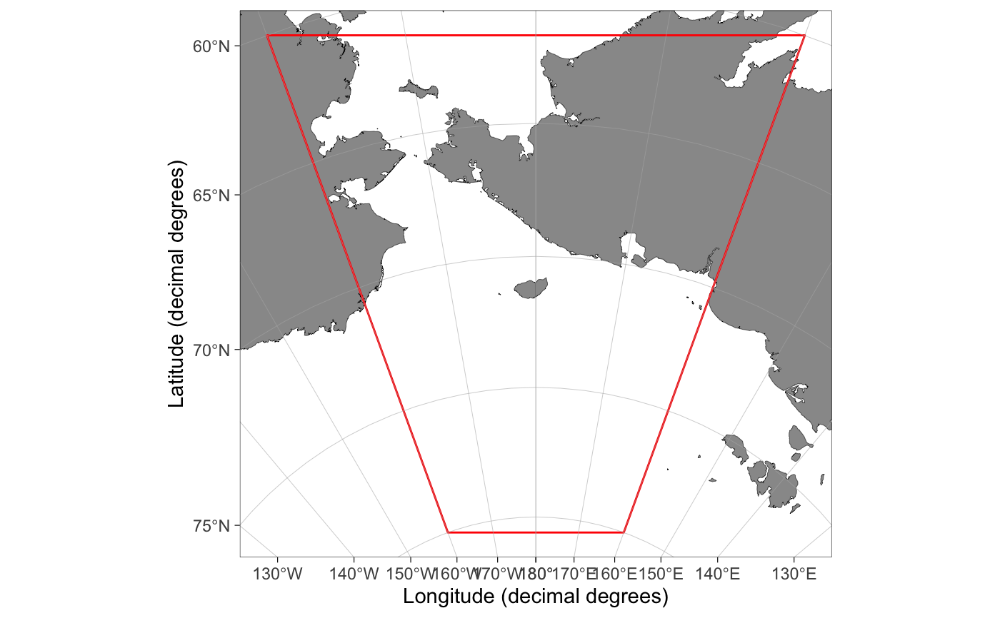
## To find UTM coordinates to limit a polar map:
basemap(limits = 60, projection.grid = TRUE)
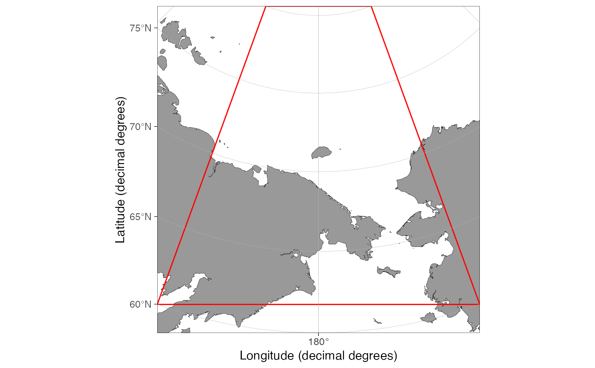
if (FALSE) {
# (Arctic shapes require a download in 2.0)
basemap(limits = c(2.5e4, -2.5e6, 2e6, -2.5e5), shapefiles = "Arctic")
# Using custom shapefiles (requires download):
data(bs_shapes, package = "ggOceanMapsData")
basemap(shapefiles = list(land = bs_land))#'
# Premade shapefiles from ggOceanMapsLargeData (requires download):
basemap("BarentsSea", bathymetry = TRUE)
}
# grid.col = NA removes grid lines, rotate = TRUE rotates northwards:
basemap(limits = c(-180, -140, 50, 70), grid.col = NA, rotate = TRUE)
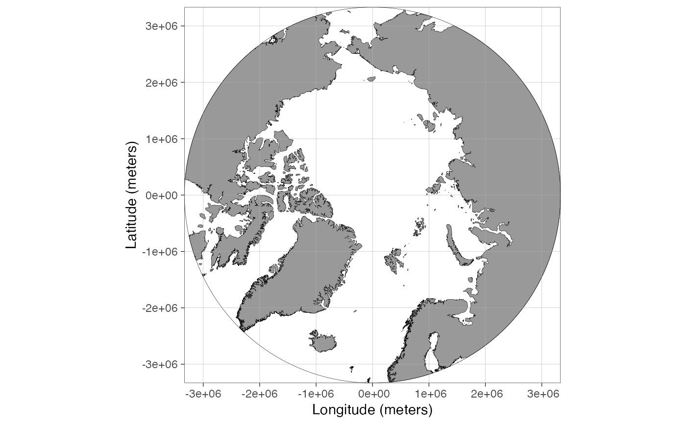
# Rename axis labels
basemap(limits = c(-140, -105, 20, 40), bathymetry = TRUE) + xlab("Lat")
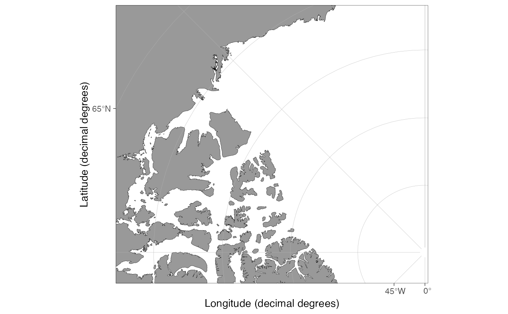
# Remove axis labels
basemap(limits = c(0, 60, 68, 80)) + labs(x = NULL, y = NULL)
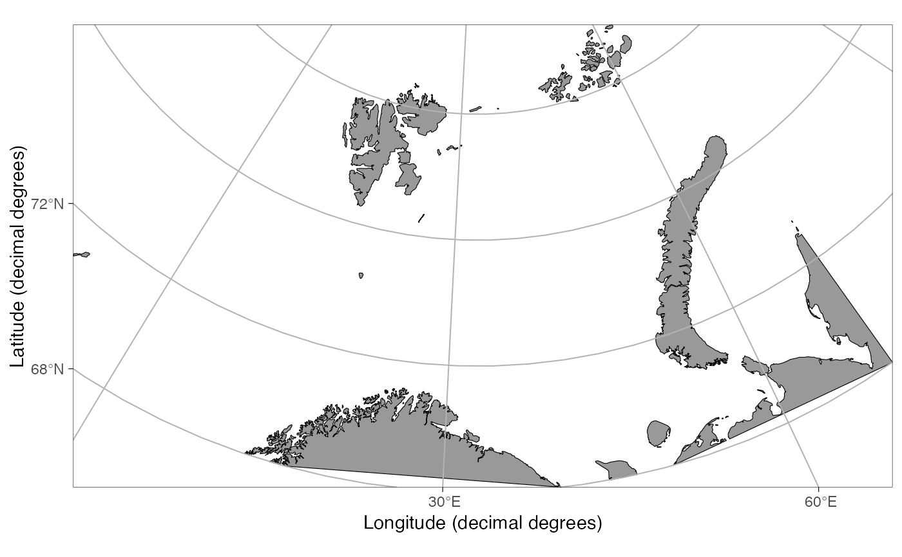
basemap(limits = c(0, 60, 68, 80), rotate = TRUE) +
theme(axis.title = element_blank(),
axis.text = element_blank(),
axis.ticks.x = element_blank(),
axis.ticks.y = element_blank()
)
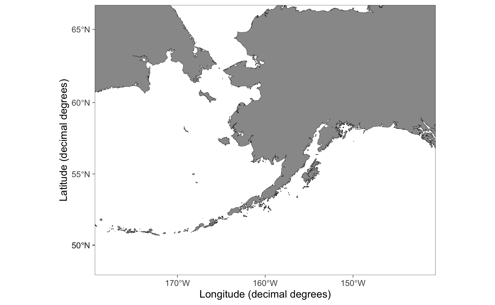
# }
# \donttest{
# Bathymetry can be added using the respective argument:
basemap(limits = -60, bathymetry = TRUE)
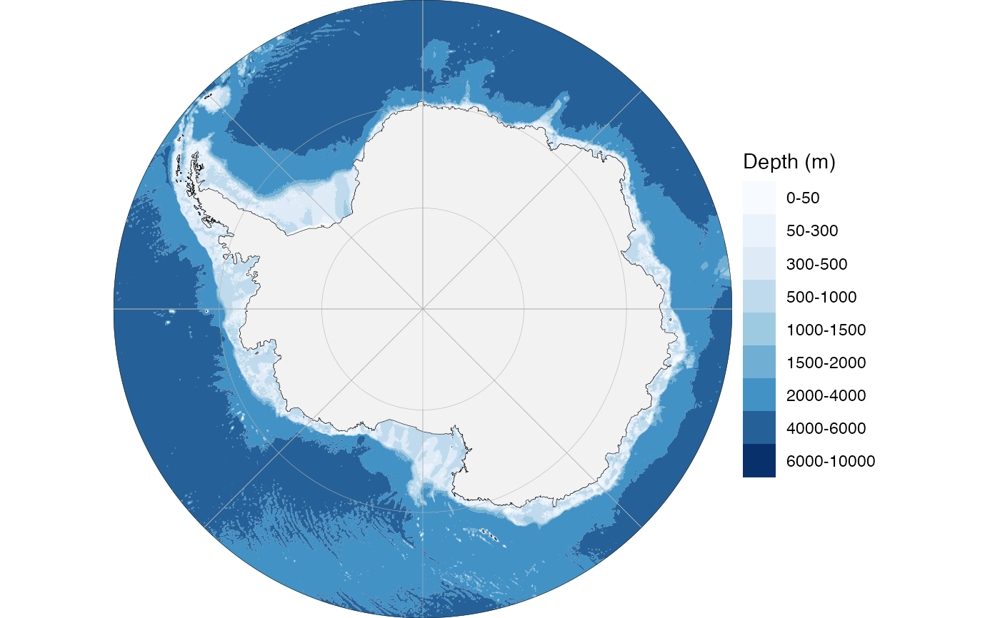
if (FALSE) {
# Glaciers require a download in the new version:
basemap(limits = -60, glaciers = TRUE, shapefiles = "Arctic")
}
# The easiest way to add data on the maps is to use the ggspatial functions:
dt <- data.frame(lon = c(-150, 150), lat = c(60, 90))
if(requireNamespace("ggspatial", quietly = TRUE)) {
basemap(data = dt, bathymetry = TRUE) +
ggspatial::geom_spatial_point(data = dt, aes(x = lon, y = lat),
color = "red")
}
#> Assuming `crs = 4326` in stat_spatial_identity()
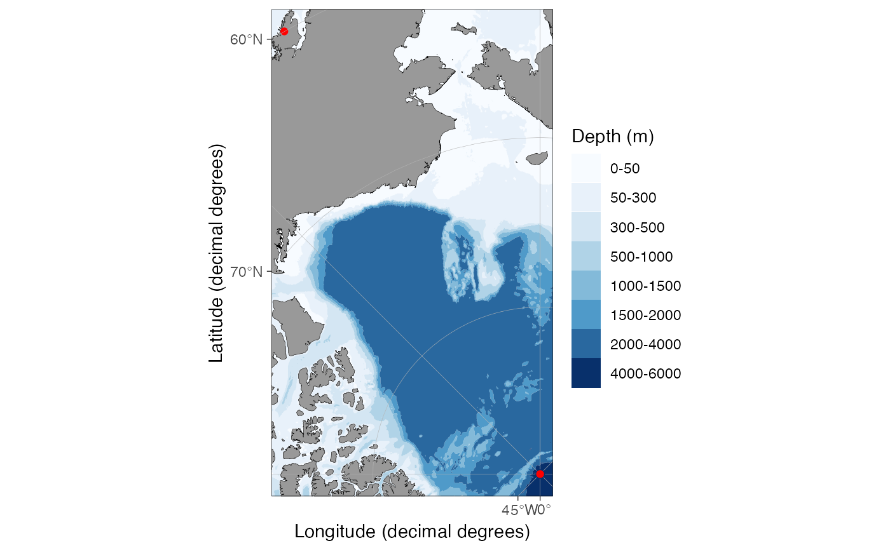
if (FALSE) {
# Note that writing out data = dt is required because there are multiple
# underlying ggplot layers plotted already:
basemap(data = dt) +
ggspatial::geom_spatial_point(dt, aes(x = lon, y = lat), color = "red")
#> Error: `mapping` must be created by `aes()`
}
# If you want to use native ggplot commands, you need to transform your data
# to the projection used by the map:
dt <- transform_coord(dt, bind = TRUE)
basemap(data = dt) +
geom_point(data = dt, aes(x = lon.proj, y = lat.proj), color = "red")
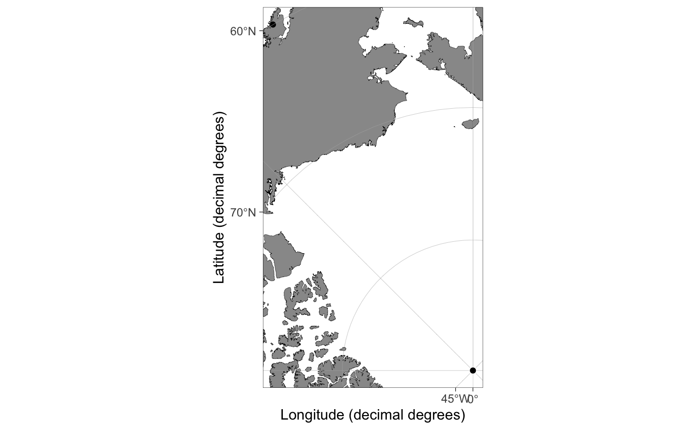
# The limits argument of length 4 plots a map anywhere in the world:
basemap(limits = c(100, 160, -20, 30), bathymetry = TRUE)
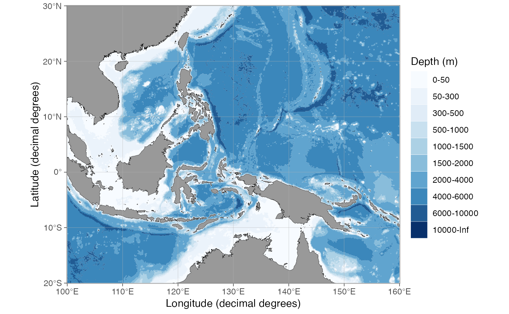
# The limits are further expanded when using the data argument:
dt <- data.frame(lon = c(-160, 160, 160, -160), lat = c(80, 80, 60, 60))
if(requireNamespace("ggspatial", quietly = TRUE)) {
basemap(data = dt) +
ggspatial::geom_spatial_polygon(data = dt, aes(x = lon, y = lat),
fill = NA, color = "red")
# Rotate:
basemap(data = dt, rotate = TRUE) +
ggspatial::geom_spatial_polygon(data = dt, aes(x = lon, y = lat),
fill = NA, color = "red")
}
#> `geom_polypath()` is deprecated: use `ggplot2::geom_polygon()` with the `subgroup` aesthetic
#> `geom_polypath()` is deprecated: use `ggplot2::geom_polygon()` with the `subgroup` aesthetic
#> Assuming `crs = 4326` in stat_spatial_identity()
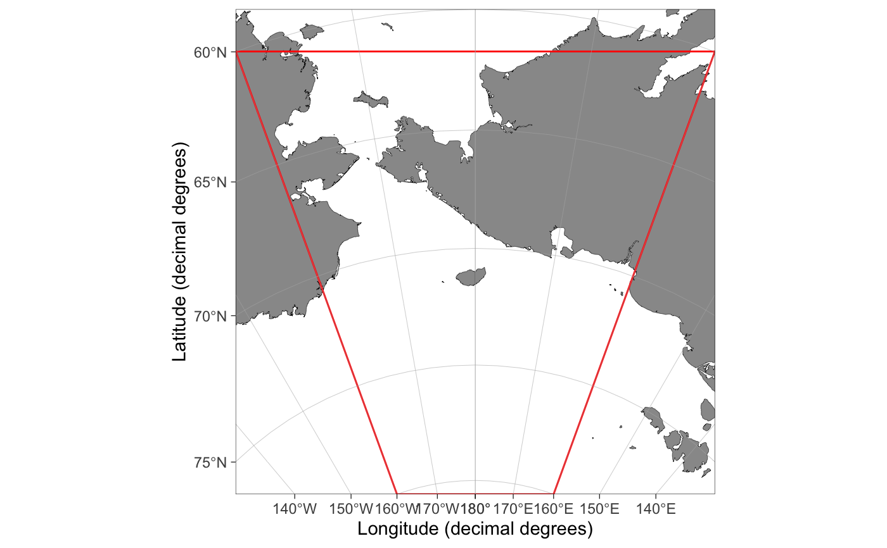
# Alternative:
basemap(data = dt, rotate = TRUE) +
geom_polygon(data = transform_coord(dt, rotate = TRUE),
aes(x = lon, y = lat), fill = NA, color = "red")
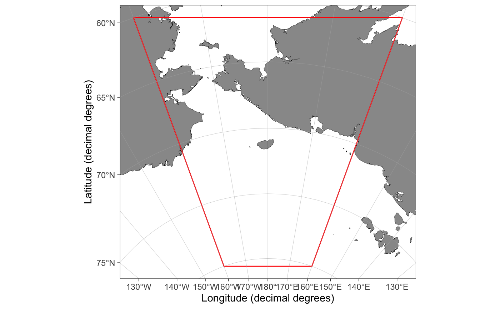
## To find UTM coordinates to limit a polar map:
basemap(limits = 60, projection.grid = TRUE)
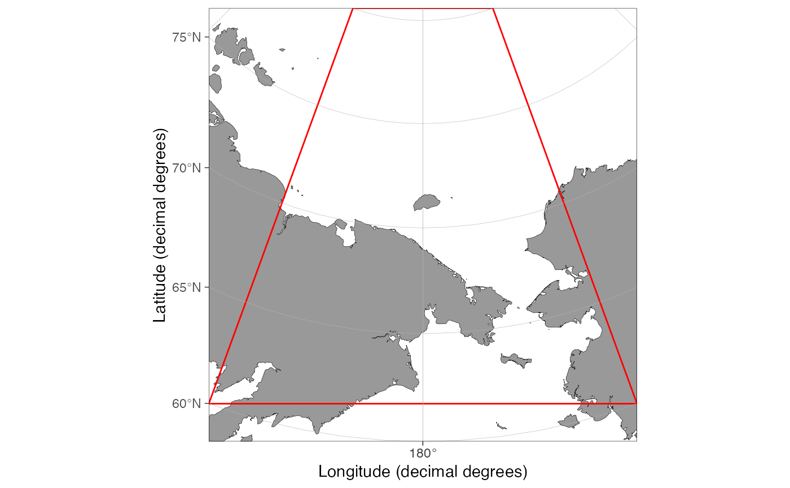
if (FALSE) {
# (Arctic shapes require a download in 2.0)
basemap(limits = c(2.5e4, -2.5e6, 2e6, -2.5e5), shapefiles = "Arctic")
# Using custom shapefiles (requires download):
data(bs_shapes, package = "ggOceanMapsData")
basemap(shapefiles = list(land = bs_land))#'
# Premade shapefiles from ggOceanMapsLargeData (requires download):
basemap("BarentsSea", bathymetry = TRUE)
}
# grid.col = NA removes grid lines, rotate = TRUE rotates northwards:
basemap(limits = c(-180, -140, 50, 70), grid.col = NA, rotate = TRUE)
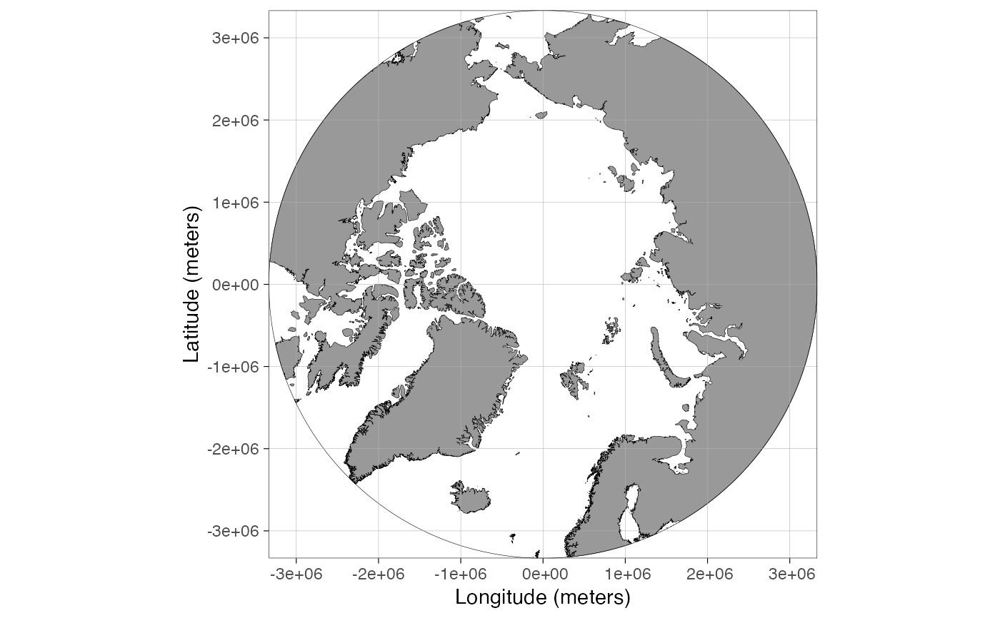
# Rename axis labels
basemap(limits = c(-140, -105, 20, 40), bathymetry = TRUE) + xlab("Lat")
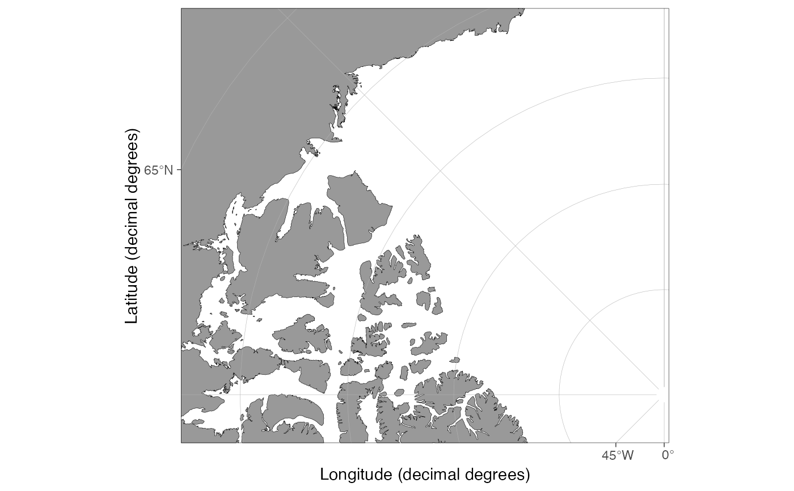
# Remove axis labels
basemap(limits = c(0, 60, 68, 80)) + labs(x = NULL, y = NULL)
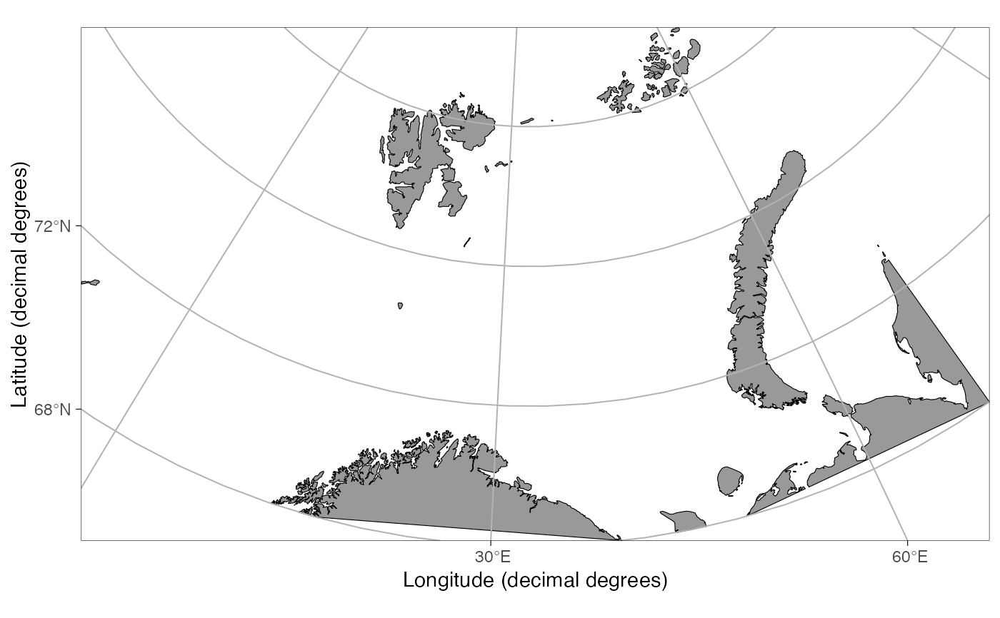
basemap(limits = c(0, 60, 68, 80), rotate = TRUE) +
theme(axis.title = element_blank(),
axis.text = element_blank(),
axis.ticks.x = element_blank(),
axis.ticks.y = element_blank()
)
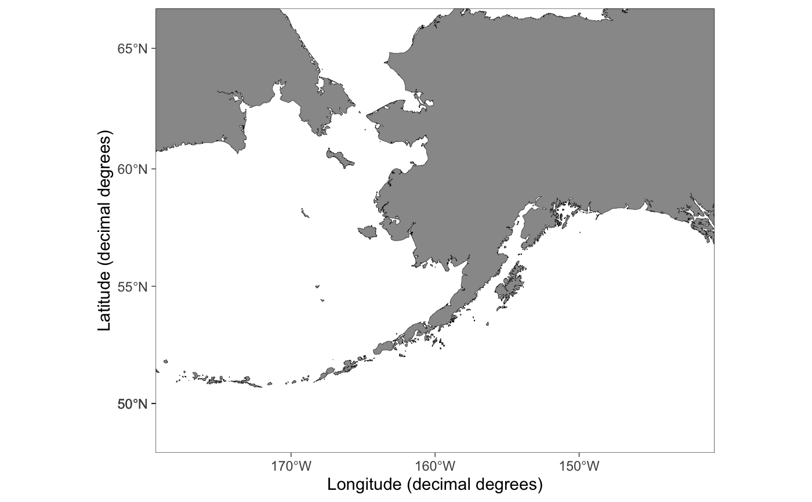
# }